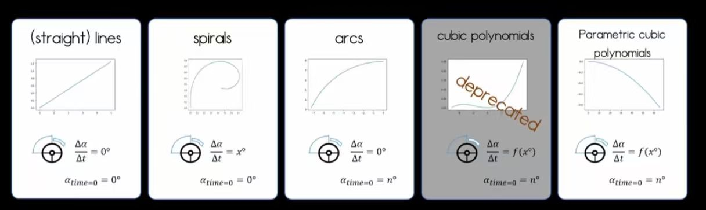

1. 几何基元与转向控制逻辑

上图展示了 OpenDRIVE 几何基元在车辆动力学中的不同角色，特别是转向轮角度变化率 (Δα/Δt) 的表现：
- Line (直线): Δα/Δt = 0，车辆保持直线行驶，方向盘角度恒定。
- Spirals (螺旋线): Δα/Δt = x°，转向轮均匀转动，用于平滑过渡至弯道。
- Arcs (圆弧): Δα/Δt = 0，转向轮保持固定角度，适合定半径弧线行驶。
- Parametric Cubic Polynomials: Δα/Δt = f(x°)，转向控制随函数动态变化，适用于复杂轨迹跟踪。